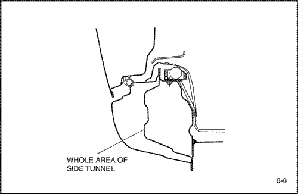

- Retire las piezas relacionadas.
- Puertas.
- Tiras meteorológicas, tapizado del pilar y piezas relacionadas.
- Alfombra.
- Conjunto del cinturón de seguridad
- Interruptor de puerta y cableado de conexión.
- Tubería de combustible y tubería de aceite para frenos.
- Otras piezas relacionadas.
Nota: Extraiga y enderece la zona dañada hasta lograr aproximadamente la forma original.
- Retire las piezas relacionadas.
- Los daños pueden extenderse al bastidor interior del techo, la apertura de puerta de bastidor interior y al suelo. En primer lugar determine la extensión de los daños, de forma que pueda extraerse el bastidor adecuadamente.
Nota: Use cubiertas protectoras resistentes al calor para proteger zonas pintadas, asientos, alfombras y otros elementos.
- Extraiga y enderece las zonas dañadas.
- No tire más de lo necesario.
- Corte y levante la apertura de puerta de bastidor.
- Compruebe el daño en la apertura de puerta de bastidor, luego corte la nueva apertura de puerta de bastidor de forma que se solape unos 30mm (1,18 pul.) en el pilar delantero y trasero.
- Corte la zona dañada con una sierra manual a lo largo de la línea gruesa mostrada a continuación.
Nota: Tenga cuidado de no cortar el panel interior. Esto podría dar lugar a una reparación de mayor envergadura.


- Si el daño implica a parte del pilar central, córtelo tal como se muestra.
- Marque con punzón alrededor de las impresiones de la soldadura por puntos en la brida soldada.
- Utilice un cortador de puntos de soldadura especial para taladrar orificios en los puntos de soldadura.
Nota: Cuando realice los taladros tenga cuidado de no perforar hasta el panel interior.
- Levante el panel de la apertura de puerta de bastidor con un escoplo neumático, dejando intactas las bridas de soldadura.
Precaución: Para evitar lesiones en los ojos, utilice guantes de seguridad siempre que lije, corte o amole.
- Piezas del moldeo dañadas relacionadas.
- Rellene cualquier orificio realizado mediante la soldadura.
Precaución: Para evitar lesiones en los ojos y quemaduras al soldar, utilice un casco de soldador adecuado, guantes y calzado de seguridad.
- Utilice un martillo y un sufridor para moldear las zonas dañadas del panel interior restante y alise las bridas de soldadura.
- Nivele y elimine la rebaba de los puntos de soldadura levantados con una lijadora de disco.
- Lije la pintura y el revestimiento inferior de ambos lados de la brida a soldar.
- Coloque la nueva apertura de puerta de bastidor.
- Amole ambos lados de la sección de soldadura de la pieza de apertura de puerta de bastidor preparada con una lijadora de disco para eliminar la pintura y dejar expuesta la plancha de acero.
- Fije el nuevo panel en su lugar con la mordaza de sujeción.
- Suelde por puntos la sección embridada para una instalación temporal.
Precaución: Para evitar lesiones en los ojos y quemaduras al soldar, utilice un casco de soldador adecuado, guantes y calzado de seguridad.
- Retire las mordazas de sujeción e instale temporalmente el guardabarros y las puertas, luego compruebe las distancias de seguridad, niveles las diferencias y el aspecto exterior.
- Realice la soldadura principal.
- Suelde la apertura de puerta de bastidor delantera y trasera y el pilar central en las juntas a tope con un soldador de gas o MIG.
- Suelde por puntos la apertura de puerta de bastidor y el pilar central tal como se muestra.
Precaución: Para evitar lesiones en los ojos y quemaduras al soldar, utilice un casco de soldador adecuado, guantes y calzado de seguridad.
- Realice, en primer lugar una soldadura de prueba y compruebe la condición de la misma.
- Aumente el número de puntos en un 20% para zonas en las que se realizará soldadura por puntos.
- Acabe las zonas de soldadura.
- Nivele las zonas de soldadura con gas o MIG con la lijadora de disco, luego alise las zonas altas con un martillo, teniendo cuidado de no deformarlas.
Precaución: Para evitar lesiones en los ojos, utilice guantes de seguridad siempre que lije, corte o amole.
- Utilice un martillo y un sufridor para alisar las zonas de soldadura por puntos y lograr un ajuste preciso con la superficie del panel de apertura de puerta de bastidor.
- Llene las deformaciones y niveles las diferencias de las zonas soldadas con soldador o masilla, luego aplique el acabado.
- Aplique el sellador.
- Aplique el sellador a las superficies de contacto del suelo y de apertura de puerta de bastidor.
- Aplique la capa interior.
- Aplique revestimiento inferior al suelo delantero.
- Aplique la pintura.
- PRECAUCION
- Ventile la zona cuando pinte con pulverizador. La mayoría de las pinturas contienen sustancias perjudiciales si se inhalan o ingieren. Lea la etiqueta de la pintura antes de abrir el contenedor de la misma.
- Evite el contacto con la piel. Cuando pinte use un respirador adecuado, guantes, protección ocular y una ropa adecuada para el trabajo.
- La pintura es inflamable. Guárdela en un lugar seguro y manténgala alejada de chispas, llamas o cigarrillos.
- Aplicación de agentes anticorrosivos.
- Aplique agentes anticorrosivos al interior de las zonas de apertura de puerta de bastidor .

- Instale las piezas relacionadas.
- Limpie el compartimento de pasajero.
- Cableado de conexión y piezas relacionadas.
- Conjunto de cinturón de seguridad y alfombra.
- Tapizados y tiras meteorológicas.
- Puerta y otros.
- Instale las piezas en el orden inverso al que se retiraron.
- Comprobar y ajustar.
- Compruebe las distancias y equilibre las diferencias.
- Compruebe el estado de bloqueo y desbloqueo de la puerta.
- Compruebe posibles fugas de agua en el compartimento de pasajero.